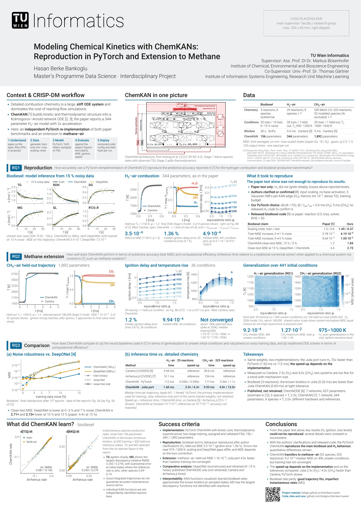

TU Wien Informatics · Interdisciplinary Project
Hasan Berke Bankoglu · Master's Programme Data Science
Supervisor: Ass. Prof. DI Dr. Markus Bösenhofer, Institute of Chemical, Environmental and Bioscience Engineering
Co-Supervisor: Univ.-Prof. Dr. Thomas Gärtner, Institute of Information Systems Engineering, Research Unit Machine Learning

A0 poster: biodiesel and hydrogen-air reproduction (RQ1), the methane-air extension (RQ2), and noise robustness and inference speed compared with DeepONet and detailed chemistry (RQ3).